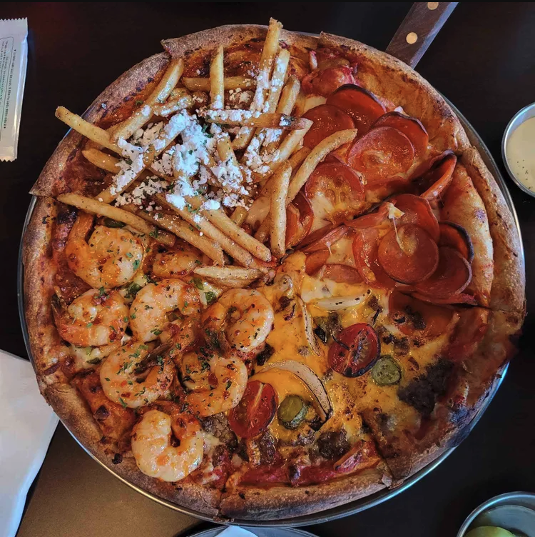

🍕 내가 좋아하는 음식
- 피자 (w. 야무진 토핑)

- 체리
- 블루베리 파르페
📅 올해 할 일
- SKALA 열심히 참여하기 *^^*
- 전공 자격증 따기
- 다이어트
✨ 나를 설명하는 단어들
- 탐구심
- 단순히 사용하는 것이 아니라 원리를 이해하려고 노력합니다.
- 차분함
- 문제를 하나씩 분석하며 해결하는 편입니다.
- 사용자 중심
- 기능뿐 아니라 사용하기 편한 화면도 중요하게 생각합니다.
- 배움
- 새로운 지식을 배우는 과정 자체를 즐깁니다.
제가 좋아하는 것들과 올해의 계획, 그리고 저를 표현하는 단어들입니다.
